Halógenas y faros antiniebla en Panamá
114 disponibles hoy, originales y genéricas, cada una con su foto y su código. Elige la marca de tu carro:
- Garantía de 3 días
- Foto real de cada pieza
- Efectivo, Yappy o ACH
- Lunes a sábado, 8:00 a. m. a 5:00 p. m.
Halógenas y faros antiniebla para KIA 24
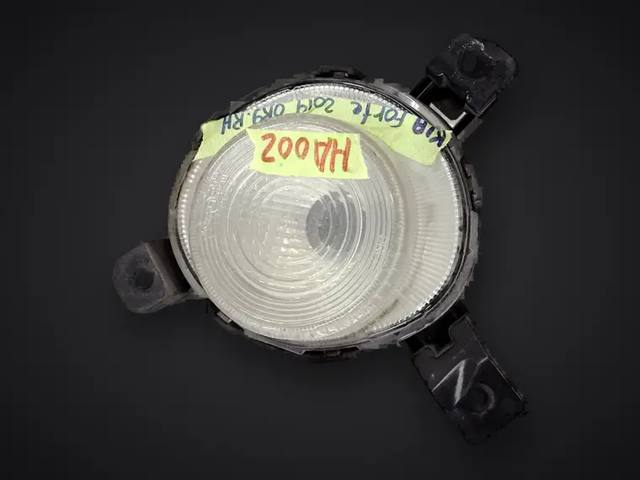
HA002KIA Forte2019-21 · lado derecho · original HA011KIA Sportage2011-16 · lado derecho
HA011KIA Sportage2011-16 · lado derecho HA037KIA Picanto2017-24 · lado derecho · original nuevo
HA037KIA Picanto2017-24 · lado derecho · original nuevo HA039KIA Picanto2018-22 · lado derecho · original
HA039KIA Picanto2018-22 · lado derecho · original HA017KIA Sportage2011-13 · lado derecho
HA017KIA Sportage2011-13 · lado derecho HA018KIA Sportage2011-16 · lado izquierdo
HA018KIA Sportage2011-16 · lado izquierdo HA038KIA Picanto2017-24 · lado izquierdo · original nuevo
HA038KIA Picanto2017-24 · lado izquierdo · original nuevo HA012KIA Sportage2011-16 · lado izquierdo
HA012KIA Sportage2011-16 · lado izquierdo HA040KIA Sportage2007-10 · lado izquierdo · nuevo
HA040KIA Sportage2007-10 · lado izquierdo · nuevo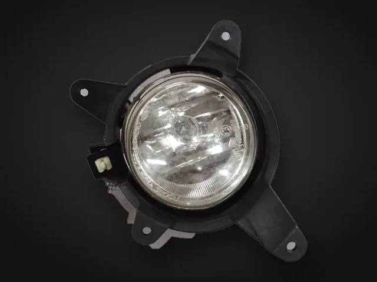
HA041KIA Sportage2007-10 · lado derecho · nuevo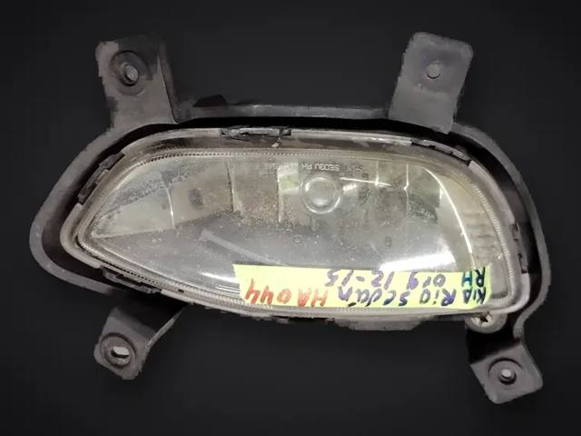
HA044KIA Rio Sedán2012-15 · lado derecho · original HA064KIA Rio Sedán2012-15 · lado derecho · original
HA064KIA Rio Sedán2012-15 · lado derecho · original HA069KIA K32023-25 · lado derecho · original
HA069KIA K32023-25 · lado derecho · original HA074KIA Picanto2011-15 · lado derecho · original
HA074KIA Picanto2011-15 · lado derecho · original HA103KIA Rio2018-20 · lado derecho
HA103KIA Rio2018-20 · lado derecho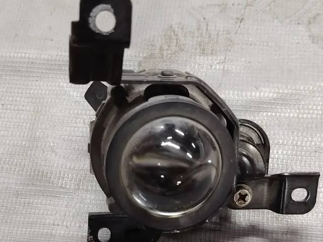
HA104KIA Rio2017-22 · lado izquierdo HA105KIA Rio2012-15 · lado izquierdo
HA105KIA Rio2012-15 · lado izquierdo HA106KIA Rio Sedán2015-17 · lado izquierdo · original nuevo
HA106KIA Rio Sedán2015-17 · lado izquierdo · original nuevo HA107KIA Picanto2017-22 · lado derecho
HA107KIA Picanto2017-22 · lado derecho HA108KIA Picanto2017-22 · lado izquierdo · original
HA108KIA Picanto2017-22 · lado izquierdo · original HA109KIA Picanto2017-22 · lado izquierdo · original
HA109KIA Picanto2017-22 · lado izquierdo · original HA110KIA Soluto2020-26 · lado derecho
HA110KIA Soluto2020-26 · lado derecho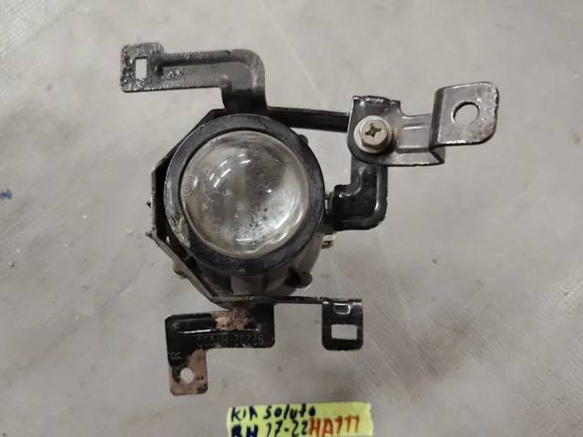
HA111KIA Soluto2020-26 · lado derecho HA113KIA Soluto2020-26 · lado derecho
HA113KIA Soluto2020-26 · lado derechoHalógenas y faros antiniebla para Nissan 21
 HA033Nissan D21 Pickup1990-97 · lado derecho · nuevo
HA033Nissan D21 Pickup1990-97 · lado derecho · nuevo HA024Nissan D21 Pickup1990-97 · lado izquierdo · nuevo
HA024Nissan D21 Pickup1990-97 · lado izquierdo · nuevo HA019Nissan D21 Pickup1990-97 · lado derecho · nuevo
HA019Nissan D21 Pickup1990-97 · lado derecho · nuevo HA027Nissan D21 Pickup1990-97 · lado derecho · nuevo
HA027Nissan D21 Pickup1990-97 · lado derecho · nuevo HA022Nissan D21 Pickup1990-97 · lado izquierdo · nuevo
HA022Nissan D21 Pickup1990-97 · lado izquierdo · nuevo HA029Nissan D21 Pickup1990-97 · lado derecho · nuevo
HA029Nissan D21 Pickup1990-97 · lado derecho · nuevo HA028Nissan D21 Pickup1990-97 · lado izquierdo · nuevo
HA028Nissan D21 Pickup1990-97 · lado izquierdo · nuevo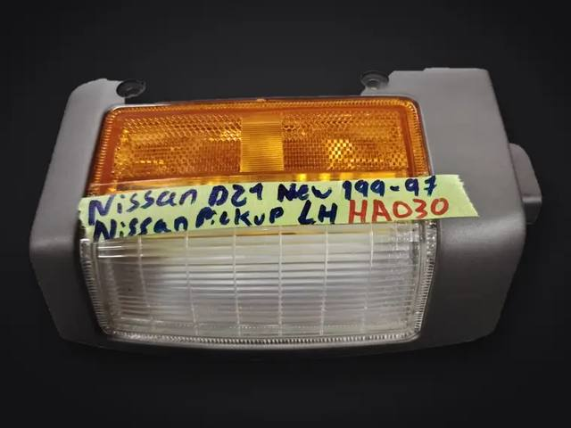
HA030Nissan D21 Pickup1990-97 · lado izquierdo · nuevo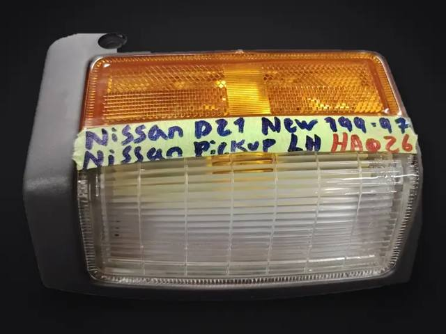
HA026Nissan D21 Pickup1990-97 · lado izquierdo · nuevo HA020Nissan D21 Pickup1990-97 · lado izquierdo · nuevo
HA020Nissan D21 Pickup1990-97 · lado izquierdo · nuevo HA021Nissan D21 Pickup1990-97 · lado derecho · nuevo
HA021Nissan D21 Pickup1990-97 · lado derecho · nuevo HA025Nissan D21 Pickup1990-97 · lado derecho · nuevo
HA025Nissan D21 Pickup1990-97 · lado derecho · nuevo HA023Nissan D21 Pickup1990-97 · lado derecho · nuevo
HA023Nissan D21 Pickup1990-97 · lado derecho · nuevo HA031Nissan D21 Pickup1990-97 · lado derecho · nuevo
HA031Nissan D21 Pickup1990-97 · lado derecho · nuevo HA032Nissan D21 Pickup1990-97 · lado izquierdo · nuevo
HA032Nissan D21 Pickup1990-97 · lado izquierdo · nuevo HA045Nissan X-Trail2017-21 · lado izquierdo
HA045Nissan X-Trail2017-21 · lado izquierdo HA059Nissan Sentra / X-Trail / Kicks / Versa2017-23 · lado derecho · nuevo
HA059Nissan Sentra / X-Trail / Kicks / Versa2017-23 · lado derecho · nuevo HA075Nissan X-Trail2008-14 · lado izquierdo
HA075Nissan X-Trail2008-14 · lado izquierdo HA077Nissan Pathfinder2013-16 · lado derecho
HA077Nissan Pathfinder2013-16 · lado derecho HA003Nissan X-Trail / Versa2018-22 · lado izquierdo · genérico
HA003Nissan X-Trail / Versa2018-22 · lado izquierdo · genérico HA060Nissan X-Trail / Versa2018-22 · lado derecho
HA060Nissan X-Trail / Versa2018-22 · lado derechoHalógenas y faros antiniebla para Hyundai 20
 HA013Hyundai Accent2012-17 · lado derecho
HA013Hyundai Accent2012-17 · lado derecho HA014Hyundai Accent2012-17 · lado izquierdo
HA014Hyundai Accent2012-17 · lado izquierdo HA005Hyundai Creta2016-18 · lado izquierdo · original nuevo
HA005Hyundai Creta2016-18 · lado izquierdo · original nuevo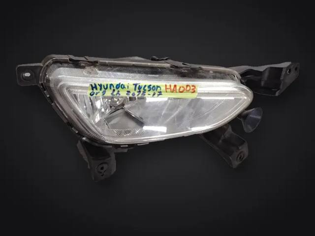
HA042Hyundai Tucson2015-17 · lado izquierdo · original HA006Hyundai Creta2016-19 · lado derecho
HA006Hyundai Creta2016-19 · lado derecho HA004Hyundai Tucson2015-17 · lado derecho · original
HA004Hyundai Tucson2015-17 · lado derecho · original HA054Hyundai Creta2014-18 · lado izquierdo
HA054Hyundai Creta2014-18 · lado izquierdo HA057Hyundai Accent2012-15 · lado derecho
HA057Hyundai Accent2012-15 · lado derecho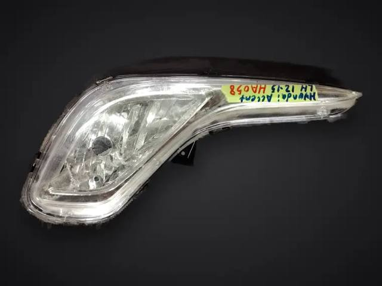
HA058Hyundai Accent2012-15 · lado izquierdo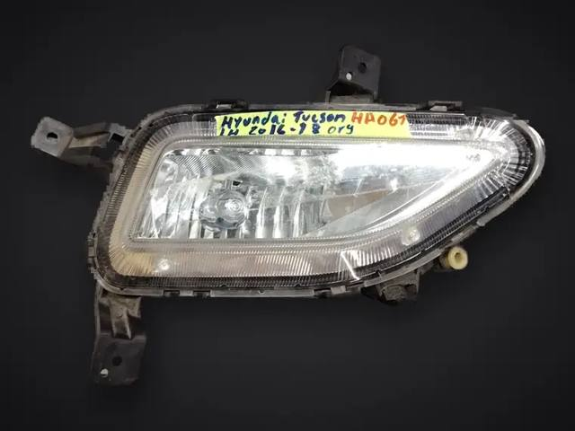
HA061Hyundai Tucson2016-18 · lado izquierdo · original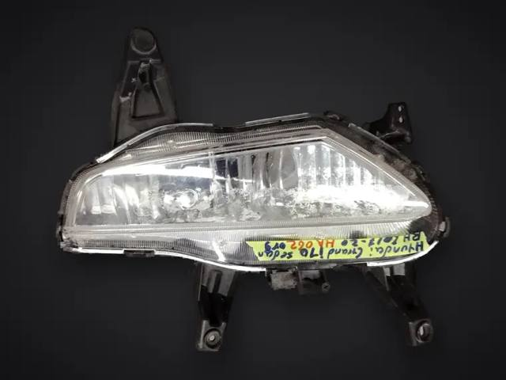
HA062Hyundai Grand i10 Sedán2017-20 · lado derecho · original HA063Hyundai Grand i10 Sedán2017-20 · lado derecho · original
HA063Hyundai Grand i10 Sedán2017-20 · lado derecho · original HA065Hyundai Elantra2016-18 · lado derecho · original
HA065Hyundai Elantra2016-18 · lado derecho · original HA067Hyundai Elantra Coupé2013-14 · lado derecho · original
HA067Hyundai Elantra Coupé2013-14 · lado derecho · original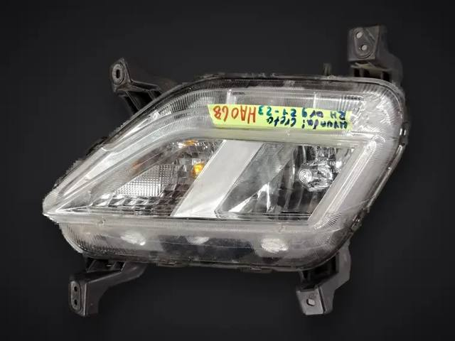
HA068Hyundai Creta2021-23 · lado derecho · original HA072Hyundai Grand i102013-17 · lado derecho · original
HA072Hyundai Grand i102013-17 · lado derecho · original HA100Hyundai Accent / HB202021-26 · lado derecho · original
HA100Hyundai Accent / HB202021-26 · lado derecho · original HA101Hyundai Accent / HB202021-26 · lado derecho · original
HA101Hyundai Accent / HB202021-26 · lado derecho · original HA102Hyundai Accent / HB202021-26 · lado izquierdo · original
HA102Hyundai Accent / HB202021-26 · lado izquierdo · original HA115Hyundai Verna2017-22 · lado izquierdo · original
HA115Hyundai Verna2017-22 · lado izquierdo · originalHalógenas y faros antiniebla para Toyota 14
 HA036Toyota Corolla1993-97 · lado izquierdo · nuevo
HA036Toyota Corolla1993-97 · lado izquierdo · nuevo HA035Toyota Corolla1993-97 · lado derecho · nuevo
HA035Toyota Corolla1993-97 · lado derecho · nuevo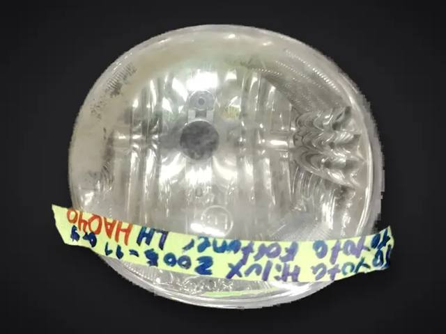
HA043Toyota Hilux / Fortuner2005-11 · lado izquierdo · original HA052Toyota Corolla2017-19 · lado izquierdo · nuevo
HA052Toyota Corolla2017-19 · lado izquierdo · nuevo HA070Toyota RAV42006-08 · lado derecho · original
HA070Toyota RAV42006-08 · lado derecho · original HA073Toyota Fortuner2005-12 · lado derecho
HA073Toyota Fortuner2005-12 · lado derecho HA078Toyota 4Runner / Prius2010-15 · lado derecho · original
HA078Toyota 4Runner / Prius2010-15 · lado derecho · original HA080Toyota Avanza2012-25 · lado derecho
HA080Toyota Avanza2012-25 · lado derecho HA081Toyota RAV42014-20 · lado derecho
HA081Toyota RAV42014-20 · lado derecho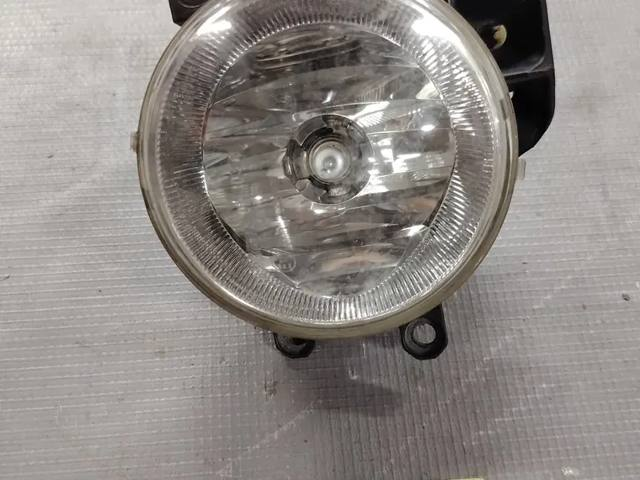
HA087Toyota Hilux2016-19 · lado derecho HA088Toyota Hilux2016-19 · lado izquierdo
HA088Toyota Hilux2016-19 · lado izquierdo HA091Toyota Prius2010 · lado izquierdo
HA091Toyota Prius2010 · lado izquierdo HA096Toyota Land Cruiser2012-21 · lado derecho · original nuevo
HA096Toyota Land Cruiser2012-21 · lado derecho · original nuevo HA098Toyota Hilux Vigo2006-11 · lado izquierdo
HA098Toyota Hilux Vigo2006-11 · lado izquierdoHalógenas y faros antiniebla para Suzuki 8
 HA086Suzuki Dzire2019-20
HA086Suzuki Dzire2019-20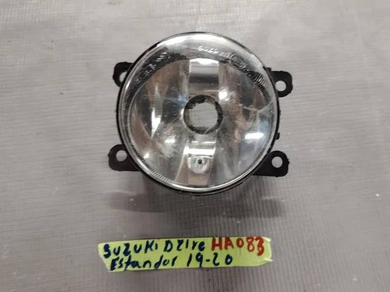
HA112Suzuki Dzire2019-20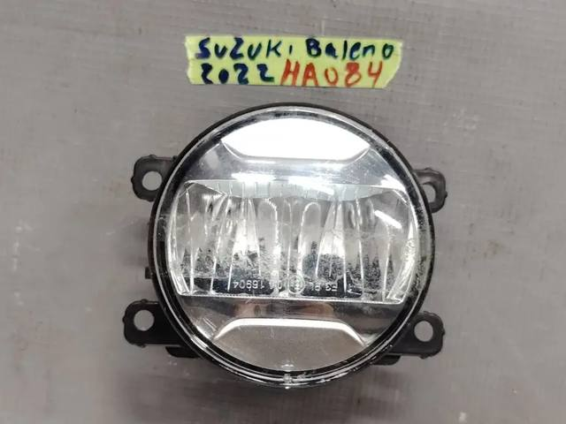
HA084Suzuki Baleno2019-22 HA085Suzuki Baleno2019-22
HA085Suzuki Baleno2019-22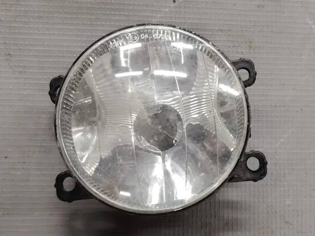
HA090Suzuki Baleno / Swift2018-24 · lado derecho HA093Suzuki Baleno2018-24 · lado derecho
HA093Suzuki Baleno2018-24 · lado derecho HA094Suzuki Vitara2015-21 · lado izquierdo
HA094Suzuki Vitara2015-21 · lado izquierdo HA114Suzuki Jimny2023 · lado izquierdo · original
HA114Suzuki Jimny2023 · lado izquierdo · originalHalógenas y faros antiniebla para Isuzu 5
 HA048Isuzu NPR / NKR / NHR2006-11 · lado izquierdo
HA048Isuzu NPR / NKR / NHR2006-11 · lado izquierdo HA049Isuzu NPR / NKR / NHR2006-11 · lado izquierdo
HA049Isuzu NPR / NKR / NHR2006-11 · lado izquierdo HA050Isuzu NPR / NKR / NHR2006-11 · lado izquierdo · nuevo
HA050Isuzu NPR / NKR / NHR2006-11 · lado izquierdo · nuevo HA055Isuzu Elf / NLR / NMR / NPR / NQR2008-15 · lado derecho · nuevo
HA055Isuzu Elf / NLR / NMR / NPR / NQR2008-15 · lado derecho · nuevo HA056Isuzu Elf / NLR / NMR / NPR / NQR2008-15 · lado izquierdo
HA056Isuzu Elf / NLR / NMR / NPR / NQR2008-15 · lado izquierdoHalógenas y faros antiniebla para RAM 3
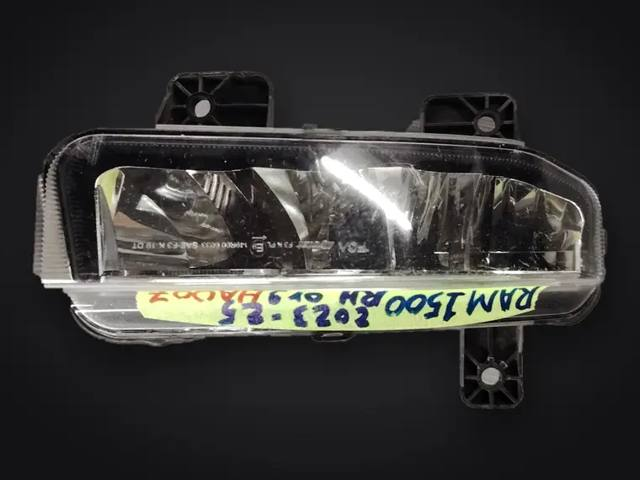
HA007RAM 15002023-25 · lado derecho · original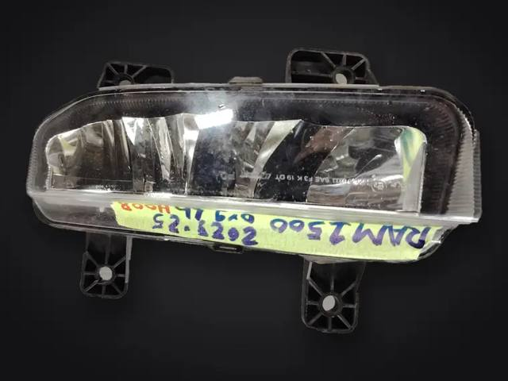
HA008RAM 15002023-25 · lado izquierdo · original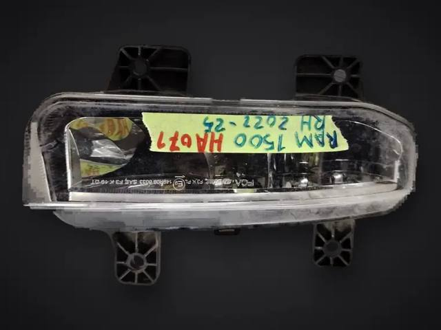
HA071RAM 15002022-25 · lado derechoHalógenas y faros antiniebla para Honda 3
 HA016Honda Pilot2016-18 · lado izquierdo · original
HA016Honda Pilot2016-18 · lado izquierdo · original HA015Honda Pilot2016-18 · lado derecho · original
HA015Honda Pilot2016-18 · lado derecho · original HA079Honda Civic Sedán2013-15 · lado derecho
HA079Honda Civic Sedán2013-15 · lado derechoHalógenas y faros antiniebla para Ford 3
 HA095Ford Mustang2016-18
HA095Ford Mustang2016-18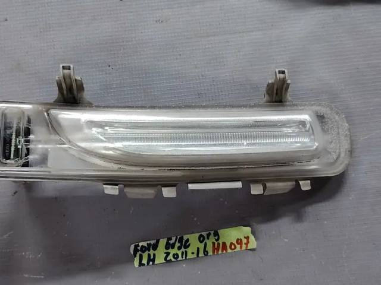
HA097Ford Edge2011-14 · lado izquierdo · original HA099Ford Edge / Flex / Fusion / Taurus2007-19
HA099Ford Edge / Flex / Fusion / Taurus2007-19Halógenas y faros antiniebla para Daewoo 2
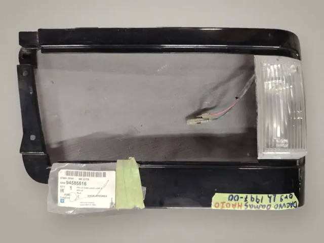
HA010Daewoo Damas1997-00 · lado izquierdo · original nuevo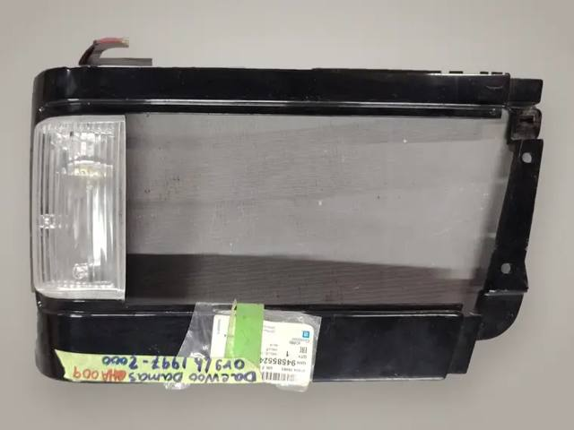
HA009Daewoo Damas1997-2000 · lado izquierdo · originalHalógenas y faros antiniebla para GAC 2
 HA047GAC GS3 Power
HA047GAC GS3 PowerHalógenas y faros antiniebla para Mercedes-Benz 2
 HA053Mercedes-Benz W204 / W212 / SLK2012-15 · lado izquierdo
HA053Mercedes-Benz W204 / W212 / SLK2012-15 · lado izquierdo HA076Mercedes-Benz Mercedes Benz2004-12 · lado izquierdo · original
HA076Mercedes-Benz Mercedes Benz2004-12 · lado izquierdo · originalHalógenas y faros antiniebla para BMW 2
 HA082BMW X3 / X4
HA082BMW X3 / X4 HA083BMW X3 / X4
HA083BMW X3 / X4Halógenas y faros antiniebla para Volkswagen 1
Halógenas y faros antiniebla para JMC 1
Halógenas y faros antiniebla para Jeep 1
 HA066Jeep Wrangler
HA066Jeep WranglerHalógenas y faros antiniebla para Subaru 1
Halógenas y faros antiniebla para Chery 1
 HA092Chery Karry Q22
HA092Chery Karry Q22Otros tipos de pieza
Parrillas 339Faros y lámparas delanteras 265Defensas traseras 261Defensas delanteras 221Lámparas traseras 210Flares 183Covers de halógena 167Guardafangos 143Puertas 99Cubrepolvos 93Refuerzos delanteros 79Capós 69Tapas de baúl 69Depósitos de agua 64Marcos de radiador 58Retrovisores 57Estribos y rolling boards 55Defensas traseras inferiores 55Defensas delanteras inferiores 54Tapas superiores de radiador 49Vidrios 47Molduras de puerta 47Molduras traseras 44Protectores inferiores 29Refuerzos traseros 28Guardafangos traseros 22Copas 20Extensiones de defensa trasera 18Ventiladores 13Molduras delanteras 13Extensiones de defensa delantera 8Tableros 6Accesorios nuevos 5Soportes de defensa 2Discos de freno 1Covers de vagón (bedliner) 1